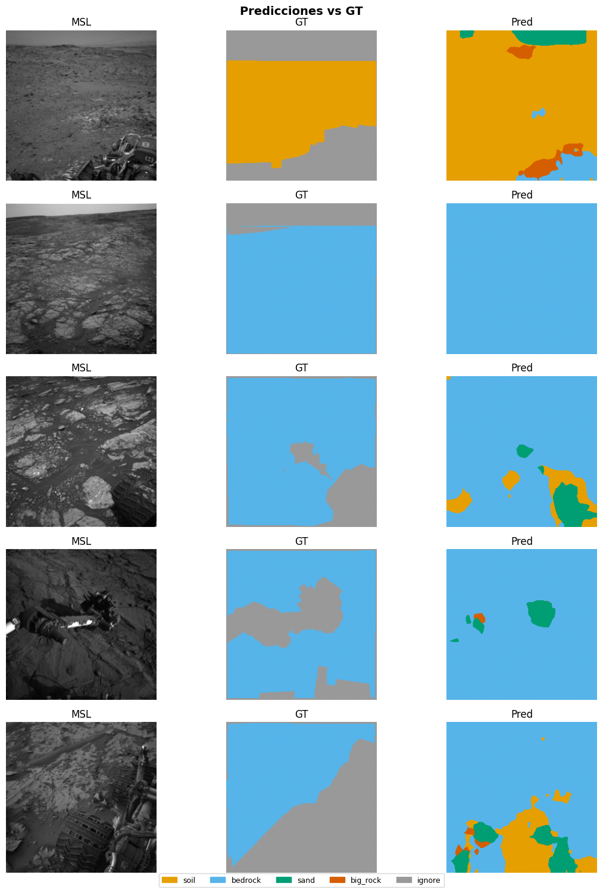

03a — DeepLabV3+ (ResNet-50)#
Paper: Mohammad et al., iSpaRo 2024. DOI: 10.1109/iSpaRo60631.2024.10687827
0. Configuración e Imports#
import sys, time
sys.path.append('.')
import torch, torch.nn as nn
import torchvision
import pandas as pd, numpy as np
from mars_utils_fast import ( # ← mars_utils_fast
set_seed, get_or_create_split, build_dataloaders,
run_multi_seed, append_benchmark_results,
visualize_predictions, count_parameters,
FocalDiceLoss, NUM_CLASSES, IGNORE_INDEX, SEED
)
set_seed()
device = "cuda" if torch.cuda.is_available() else "cpu"
print(f"Device: {device}")
MODEL_NAME = "deeplabv3plus"
Device: cuda
1. Dataset y DataLoaders#
df = pd.read_csv("processed/manifest_256.csv") # ← manifest_256
df_train, df_val, df_test = get_or_create_split(df)
train_loader, val_loader, test_loader = build_dataloaders(
df_train, df_val, df_test, batch_size=16, num_workers=4 # ← batch 16, workers 4
)
print(f"Batches — train: {len(train_loader)} val: {len(val_loader)} test: {len(test_loader)}")
✅ Split cargado desde processed\split_indices.pkl
Train: 16074 {'MSL': 15901, 'MER': 173}
Val : 3443 {'MSL': 3443}
Test : 3448 {'MSL': 3448}
Batches — train: 1005 val: 216 test: 216
2. Definición del Modelo#
Backbone ResNet-50 preentrenado en ImageNet. Clasificador adaptado a 4 clases. Loss total = CE_main + 0.4 * CE_aux (salida auxiliar de ResNet).
def build_deeplabv3plus():
model = torchvision.models.segmentation.deeplabv3_resnet50(
weights=None,
weights_backbone=torchvision.models.ResNet50_Weights.DEFAULT,
num_classes=NUM_CLASSES,
aux_loss=True,
)
# Reemplazar cabeza principal y auxiliar
model.classifier[4] = nn.Conv2d(256, NUM_CLASSES, kernel_size=1)
model.aux_classifier[4] = nn.Conv2d(256, NUM_CLASSES, kernel_size=1)
return model
model = build_deeplabv3plus().to(device)
params_M = count_parameters(model)
print(f"Parámetros: {params_M:.2f}M")
# Verificar forward pass
with torch.no_grad():
dummy = torch.randn(2, 3, 256, 256).to(device)
out = model(dummy)
print(f"Output main: {out['out'].shape} aux: {out['aux'].shape}")
Parámetros: 42.00M
Output main: torch.Size([2, 4, 256, 256]) aux: torch.Size([2, 4, 256, 256])
3. Entrenamiento (3 seeds)#
SGD + PolynomialLR, loss CE con ignore_index=255, aux_weight=0.4
import torch.optim as optim
def criterion_fn():
return nn.CrossEntropyLoss(ignore_index=IGNORE_INDEX)
def optimizer_fn(params):
return optim.SGD(params, lr=0.001, momentum=0.9, weight_decay=1e-4)
def scheduler_fn(opt):
return optim.lr_scheduler.PolynomialLR(opt, total_iters=80, power=0.9)
summary = run_multi_seed(
model_fn = build_deeplabv3plus,
df_train = df_train,
df_val = df_val,
df_test = df_test,
criterion_fn = criterion_fn,
optimizer_fn = optimizer_fn,
scheduler_fn = scheduler_fn,
model_name = MODEL_NAME,
device = device,
seeds = [42, 123, 7],
num_epochs = 80,
patience = 10,
batch_size = 16, # ← subido a 16 (AMP lo permite)
num_workers = 4,
aux_weight = 0.4,
use_amp = True, # ← nuevo parámetro
n_per_mission = 700, # ← subset estratificado ~2100 imágenes train
)
──────────────────────────────────────────────────
Seed 42 | deeplabv3plus
c:\Users\potot\OneDrive\Documentos\DEEP\mars_utils_fast.py:139: FutureWarning: DataFrameGroupBy.apply operated on the grouping columns. This behavior is deprecated, and in a future version of pandas the grouping columns will be excluded from the operation. Either pass `include_groups=False` to exclude the groupings or explicitly select the grouping columns after groupby to silence this warning.
df.groupby("mission", group_keys=False)
c:\Users\potot\OneDrive\Documentos\DEEP\mars_utils_fast.py:139: FutureWarning: DataFrameGroupBy.apply operated on the grouping columns. This behavior is deprecated, and in a future version of pandas the grouping columns will be excluded from the operation. Either pass `include_groups=False` to exclude the groupings or explicitly select the grouping columns after groupby to silence this warning.
df.groupby("mission", group_keys=False)
=======================================================
deeplabv3plus_seed42 | device=cuda | AMP=True
=======================================================
Ep 1/80 | loss=1.4041 mIoU=0.3016 | val=0.4034 | rock=0.0000
Ep 2/80 | loss=0.8083 mIoU=0.5146 | val=0.5056 | rock=0.0000
Ep 3/80 | loss=0.6387 mIoU=0.5704 | val=0.5063 | rock=0.0000
Ep 4/80 | loss=0.5937 mIoU=0.5742 | val=0.5648 | rock=0.0000
Ep 5/80 | loss=0.5437 mIoU=0.6035 | val=0.5587 | rock=0.0000
Ep 6/80 | loss=0.5062 mIoU=0.6125 | val=0.5933 | rock=0.0000
Ep 7/80 | loss=0.4761 mIoU=0.6231 | val=0.5789 | rock=0.0000
Ep 8/80 | loss=0.4343 mIoU=0.6409 | val=0.5898 | rock=0.0000
Ep 9/80 | loss=0.4424 mIoU=0.6298 | val=0.5934 | rock=0.0000
Ep 10/80 | loss=0.4084 mIoU=0.6486 | val=0.5787 | rock=0.0000
Ep 11/80 | loss=0.4343 mIoU=0.6351 | val=0.6009 | rock=0.0002
Ep 12/80 | loss=0.4160 mIoU=0.6523 | val=0.6028 | rock=0.0000
Ep 13/80 | loss=0.4175 mIoU=0.6544 | val=0.5959 | rock=0.0221
Ep 14/80 | loss=0.3438 mIoU=0.6839 | val=0.5908 | rock=0.0004
Ep 15/80 | loss=0.3728 mIoU=0.6957 | val=0.6043 | rock=0.0040
Ep 16/80 | loss=0.3406 mIoU=0.7153 | val=0.5844 | rock=0.0204
Ep 17/80 | loss=0.3107 mIoU=0.7270 | val=0.6210 | rock=0.0276
Ep 18/80 | loss=0.3710 mIoU=0.7355 | val=0.6147 | rock=0.0086
Ep 19/80 | loss=0.3157 mIoU=0.7703 | val=0.6169 | rock=0.0068
Ep 20/80 | loss=0.3254 mIoU=0.7535 | val=0.6187 | rock=0.0593
Ep 21/80 | loss=0.3276 mIoU=0.7400 | val=0.6271 | rock=0.0589
Ep 22/80 | loss=0.2938 mIoU=0.7912 | val=0.6321 | rock=0.0383
Ep 23/80 | loss=0.3149 mIoU=0.7934 | val=0.6398 | rock=0.0639
Ep 24/80 | loss=0.2983 mIoU=0.8033 | val=0.6301 | rock=0.0379
Ep 25/80 | loss=0.2966 mIoU=0.7848 | val=0.6407 | rock=0.0695
Ep 26/80 | loss=0.2985 mIoU=0.7775 | val=0.6244 | rock=0.0251
Ep 27/80 | loss=0.2656 mIoU=0.8308 | val=0.6291 | rock=0.0666
Ep 28/80 | loss=0.2886 mIoU=0.8046 | val=0.6325 | rock=0.0386
Ep 29/80 | loss=0.2668 mIoU=0.8189 | val=0.6288 | rock=0.0189
Ep 30/80 | loss=0.2762 mIoU=0.8284 | val=0.6127 | rock=0.0498
Ep 31/80 | loss=0.2485 mIoU=0.8485 | val=0.6370 | rock=0.0730
Ep 32/80 | loss=0.2574 mIoU=0.8286 | val=0.6200 | rock=0.0123
Ep 33/80 | loss=0.2380 mIoU=0.8325 | val=0.6317 | rock=0.0511
Ep 34/80 | loss=0.2500 mIoU=0.8468 | val=0.6334 | rock=0.0484
Ep 35/80 | loss=0.2514 mIoU=0.8374 | val=0.6360 | rock=0.0275
Early stopping en epoch 35
Mejor val mIoU=0.6407 (epoch 25) | 2470s
Test mIoU=0.6655
──────────────────────────────────────────────────
Seed 123 | deeplabv3plus
c:\Users\potot\OneDrive\Documentos\DEEP\mars_utils_fast.py:139: FutureWarning: DataFrameGroupBy.apply operated on the grouping columns. This behavior is deprecated, and in a future version of pandas the grouping columns will be excluded from the operation. Either pass `include_groups=False` to exclude the groupings or explicitly select the grouping columns after groupby to silence this warning.
df.groupby("mission", group_keys=False)
c:\Users\potot\OneDrive\Documentos\DEEP\mars_utils_fast.py:139: FutureWarning: DataFrameGroupBy.apply operated on the grouping columns. This behavior is deprecated, and in a future version of pandas the grouping columns will be excluded from the operation. Either pass `include_groups=False` to exclude the groupings or explicitly select the grouping columns after groupby to silence this warning.
df.groupby("mission", group_keys=False)
=======================================================
deeplabv3plus_seed123 | device=cuda | AMP=True
=======================================================
Ep 1/80 | loss=1.4144 mIoU=0.2744 | val=0.3215 | rock=0.0000
Ep 2/80 | loss=0.8177 mIoU=0.5108 | val=0.4951 | rock=0.0000
Ep 3/80 | loss=0.6813 mIoU=0.5470 | val=0.5069 | rock=0.0000
Ep 4/80 | loss=0.5755 mIoU=0.5971 | val=0.4046 | rock=0.0000
Ep 5/80 | loss=0.5268 mIoU=0.6053 | val=0.5796 | rock=0.0000
Ep 6/80 | loss=0.5175 mIoU=0.6111 | val=0.5599 | rock=0.0000
Ep 7/80 | loss=0.4717 mIoU=0.6274 | val=0.5908 | rock=0.0000
Ep 8/80 | loss=0.4744 mIoU=0.6249 | val=0.5973 | rock=0.0000
Ep 9/80 | loss=0.4477 mIoU=0.6394 | val=0.5987 | rock=0.0000
Ep 10/80 | loss=0.4034 mIoU=0.6516 | val=0.5786 | rock=0.0025
Ep 11/80 | loss=0.3947 mIoU=0.6517 | val=0.6055 | rock=0.0018
Ep 12/80 | loss=0.3767 mIoU=0.6680 | val=0.5961 | rock=0.0000
Ep 13/80 | loss=0.3696 mIoU=0.6877 | val=0.6040 | rock=0.0012
Ep 14/80 | loss=0.3618 mIoU=0.6932 | val=0.6010 | rock=0.0002
Ep 15/80 | loss=0.3862 mIoU=0.7080 | val=0.6074 | rock=0.0044
Ep 16/80 | loss=0.3411 mIoU=0.7411 | val=0.6170 | rock=0.0037
Ep 17/80 | loss=0.3479 mIoU=0.7619 | val=0.6188 | rock=0.0416
Ep 18/80 | loss=0.3315 mIoU=0.7605 | val=0.6193 | rock=0.0144
Ep 19/80 | loss=0.3153 mIoU=0.7855 | val=0.6251 | rock=0.0489
Ep 20/80 | loss=0.2958 mIoU=0.7926 | val=0.6258 | rock=0.0392
Ep 21/80 | loss=0.3320 mIoU=0.7845 | val=0.6276 | rock=0.0280
Ep 22/80 | loss=0.2767 mIoU=0.8089 | val=0.6228 | rock=0.0344
Ep 23/80 | loss=0.2996 mIoU=0.7898 | val=0.6142 | rock=0.0144
Ep 24/80 | loss=0.2996 mIoU=0.8037 | val=0.6255 | rock=0.0302
Ep 25/80 | loss=0.2766 mIoU=0.7925 | val=0.6214 | rock=0.0153
Ep 26/80 | loss=0.2564 mIoU=0.8218 | val=0.6279 | rock=0.0157
Ep 27/80 | loss=0.2901 mIoU=0.8224 | val=0.6277 | rock=0.0480
Ep 28/80 | loss=0.2564 mIoU=0.8269 | val=0.6236 | rock=0.0122
Ep 29/80 | loss=0.2833 mIoU=0.8319 | val=0.6049 | rock=0.0362
Ep 30/80 | loss=0.2873 mIoU=0.8441 | val=0.6247 | rock=0.0227
Ep 31/80 | loss=0.2636 mIoU=0.8560 | val=0.6256 | rock=0.0100
Ep 32/80 | loss=0.2585 mIoU=0.8356 | val=0.6205 | rock=0.0393
Ep 33/80 | loss=0.2800 mIoU=0.8364 | val=0.6305 | rock=0.0234
Ep 34/80 | loss=0.2717 mIoU=0.8473 | val=0.6025 | rock=0.0609
Ep 35/80 | loss=0.2522 mIoU=0.8356 | val=0.6267 | rock=0.0372
Ep 36/80 | loss=0.2565 mIoU=0.8657 | val=0.6308 | rock=0.0348
Ep 37/80 | loss=0.2431 mIoU=0.8553 | val=0.6221 | rock=0.0401
Ep 38/80 | loss=0.2365 mIoU=0.8302 | val=0.6230 | rock=0.0563
Ep 39/80 | loss=0.2366 mIoU=0.8832 | val=0.6277 | rock=0.0405
Ep 40/80 | loss=0.2470 mIoU=0.8782 | val=0.6329 | rock=0.0501
Ep 41/80 | loss=0.2257 mIoU=0.8505 | val=0.6397 | rock=0.0738
Ep 42/80 | loss=0.2095 mIoU=0.8753 | val=0.6358 | rock=0.0588
Ep 43/80 | loss=0.2443 mIoU=0.8527 | val=0.6418 | rock=0.0703
Ep 44/80 | loss=0.2295 mIoU=0.8658 | val=0.6327 | rock=0.0447
Ep 45/80 | loss=0.2088 mIoU=0.8827 | val=0.6456 | rock=0.0818
Ep 46/80 | loss=0.2190 mIoU=0.8769 | val=0.6423 | rock=0.0525
Ep 47/80 | loss=0.2374 mIoU=0.8535 | val=0.6471 | rock=0.0570
Ep 48/80 | loss=0.2183 mIoU=0.8784 | val=0.6358 | rock=0.0279
Ep 49/80 | loss=0.2239 mIoU=0.8789 | val=0.6312 | rock=0.0428
Ep 50/80 | loss=0.2268 mIoU=0.8594 | val=0.6339 | rock=0.0367
Ep 51/80 | loss=0.2209 mIoU=0.8803 | val=0.6272 | rock=0.0313
Ep 52/80 | loss=0.1969 mIoU=0.8901 | val=0.6272 | rock=0.0375
Ep 53/80 | loss=0.2170 mIoU=0.8802 | val=0.6312 | rock=0.0352
Ep 54/80 | loss=0.2054 mIoU=0.8653 | val=0.6369 | rock=0.0774
Ep 55/80 | loss=0.2121 mIoU=0.8887 | val=0.6314 | rock=0.0434
Ep 56/80 | loss=0.1949 mIoU=0.8917 | val=0.6354 | rock=0.0586
Ep 57/80 | loss=0.1953 mIoU=0.9051 | val=0.6425 | rock=0.0275
Early stopping en epoch 57
Mejor val mIoU=0.6471 (epoch 47) | 4043s
Test mIoU=0.6893
──────────────────────────────────────────────────
Seed 7 | deeplabv3plus
c:\Users\potot\OneDrive\Documentos\DEEP\mars_utils_fast.py:139: FutureWarning: DataFrameGroupBy.apply operated on the grouping columns. This behavior is deprecated, and in a future version of pandas the grouping columns will be excluded from the operation. Either pass `include_groups=False` to exclude the groupings or explicitly select the grouping columns after groupby to silence this warning.
df.groupby("mission", group_keys=False)
c:\Users\potot\OneDrive\Documentos\DEEP\mars_utils_fast.py:139: FutureWarning: DataFrameGroupBy.apply operated on the grouping columns. This behavior is deprecated, and in a future version of pandas the grouping columns will be excluded from the operation. Either pass `include_groups=False` to exclude the groupings or explicitly select the grouping columns after groupby to silence this warning.
df.groupby("mission", group_keys=False)
=======================================================
deeplabv3plus_seed7 | device=cuda | AMP=True
=======================================================
Ep 1/80 | loss=1.3727 mIoU=0.3141 | val=0.3423 | rock=0.0000
Ep 2/80 | loss=0.7825 mIoU=0.5195 | val=0.4400 | rock=0.0000
Ep 3/80 | loss=0.6435 mIoU=0.5554 | val=0.5164 | rock=0.0000
Ep 4/80 | loss=0.5821 mIoU=0.5849 | val=0.5502 | rock=0.0000
Ep 5/80 | loss=0.4910 mIoU=0.6196 | val=0.5766 | rock=0.0000
Ep 6/80 | loss=0.4962 mIoU=0.6142 | val=0.5682 | rock=0.0000
Ep 7/80 | loss=0.4940 mIoU=0.6258 | val=0.5557 | rock=0.0000
Ep 8/80 | loss=0.4431 mIoU=0.6361 | val=0.5766 | rock=0.0000
Ep 9/80 | loss=0.4325 mIoU=0.6348 | val=0.6070 | rock=0.0000
Ep 10/80 | loss=0.4329 mIoU=0.6403 | val=0.5991 | rock=0.0000
Ep 11/80 | loss=0.4050 mIoU=0.6412 | val=0.6018 | rock=0.0000
Ep 12/80 | loss=0.3748 mIoU=0.6550 | val=0.6112 | rock=0.0000
Ep 13/80 | loss=0.3705 mIoU=0.6579 | val=0.6068 | rock=0.0000
Ep 14/80 | loss=0.3983 mIoU=0.6532 | val=0.6068 | rock=0.0091
Ep 15/80 | loss=0.3711 mIoU=0.6858 | val=0.6163 | rock=0.0012
Ep 16/80 | loss=0.3401 mIoU=0.7163 | val=0.5995 | rock=0.0404
Ep 17/80 | loss=0.3528 mIoU=0.7145 | val=0.5892 | rock=0.0060
Ep 18/80 | loss=0.3536 mIoU=0.7372 | val=0.6123 | rock=0.0000
Ep 19/80 | loss=0.3621 mIoU=0.7440 | val=0.6212 | rock=0.0684
Ep 20/80 | loss=0.3190 mIoU=0.7567 | val=0.6209 | rock=0.0001
Ep 21/80 | loss=0.3360 mIoU=0.7683 | val=0.6133 | rock=0.0024
Ep 22/80 | loss=0.2934 mIoU=0.7943 | val=0.6100 | rock=0.0124
Ep 23/80 | loss=0.2865 mIoU=0.7623 | val=0.6267 | rock=0.0036
Ep 24/80 | loss=0.2845 mIoU=0.8126 | val=0.5982 | rock=0.0051
Ep 25/80 | loss=0.3084 mIoU=0.7914 | val=0.6093 | rock=0.0033
Ep 26/80 | loss=0.2605 mIoU=0.8263 | val=0.6167 | rock=0.0026
Ep 27/80 | loss=0.2859 mIoU=0.8321 | val=0.6041 | rock=0.0063
Ep 28/80 | loss=0.2841 mIoU=0.8175 | val=0.6254 | rock=0.0019
Ep 29/80 | loss=0.2770 mIoU=0.8381 | val=0.6163 | rock=0.0077
Ep 30/80 | loss=0.2594 mIoU=0.8309 | val=0.6191 | rock=0.0309
Ep 31/80 | loss=0.2445 mIoU=0.8199 | val=0.6294 | rock=0.0062
Ep 32/80 | loss=0.2543 mIoU=0.8063 | val=0.6225 | rock=0.0261
Ep 33/80 | loss=0.2367 mIoU=0.8376 | val=0.6171 | rock=0.0290
Ep 34/80 | loss=0.2551 mIoU=0.8388 | val=0.6251 | rock=0.0202
Ep 35/80 | loss=0.2537 mIoU=0.8378 | val=0.6256 | rock=0.0087
Ep 36/80 | loss=0.2571 mIoU=0.8134 | val=0.6269 | rock=0.0264
Ep 37/80 | loss=0.2303 mIoU=0.8635 | val=0.6227 | rock=0.0046
Ep 38/80 | loss=0.2546 mIoU=0.8460 | val=0.6253 | rock=0.0135
Ep 39/80 | loss=0.2318 mIoU=0.8663 | val=0.6265 | rock=0.0161
Ep 40/80 | loss=0.2456 mIoU=0.8450 | val=0.6247 | rock=0.0216
Ep 41/80 | loss=0.2334 mIoU=0.8363 | val=0.6241 | rock=0.0059
Early stopping en epoch 41
Mejor val mIoU=0.6294 (epoch 31) | 3194s
Test mIoU=0.6869
=======================================================
deeplabv3plus: mIoU=0.6806±0.0107 IC95=±0.0121
IoU(soil)=0.8884±0.0031
IoU(bedrock)=0.8907±0.0045
IoU(sand)=0.7752±0.0176
IoU(big_rock)=0.1680±0.0195
=======================================================
4. Guardado de resultados#
append_benchmark_results(
model_name = MODEL_NAME,
best_epoch = summary["best_epoch_mean"],
val_miou = summary["mIoU_mean"],
test_miou = summary["mIoU_mean"],
test_miou_std = summary["mIoU_std"],
test_miou_ci95= summary["mIoU_ci95"],
test_acc = summary["pixel_acc_mean"],
iou_soil = summary["iou_soil_mean"],
iou_bedrock = summary["iou_bedrock_mean"],
iou_sand = summary["iou_sand_mean"],
iou_bigrock = summary["iou_big_rock_mean"],
params_M = params_M,
train_time_s = summary["train_time_mean"],
)
✅ Resultados en results\benchmark_results.csv
5. Evaluación y Visualización#
# Cargar mejor modelo (seed 42)
import torch
best_model = build_deeplabv3plus().to(device)
ckpt = torch.load(f"checkpoints/{MODEL_NAME}_seed42_best.pth", map_location=device)
best_model.load_state_dict(ckpt["model_state"])
visualize_predictions(best_model, df_test, device, n=5,
save_path=f"results/{MODEL_NAME}_predictions.png")
print("Resumen final:")
print(f" mIoU : {summary['mIoU_mean']:.4f} ± {summary['mIoU_std']:.4f}")
for c in ["soil","bedrock","sand","big_rock"]:
print(f" IoU({c}): {summary[f'iou_{c}_mean']:.4f} ± {summary[f'iou_{c}_std']:.4f}")
C:\Users\potot\AppData\Local\Temp\ipykernel_5256\1434540937.py:4: FutureWarning: You are using `torch.load` with `weights_only=False` (the current default value), which uses the default pickle module implicitly. It is possible to construct malicious pickle data which will execute arbitrary code during unpickling (See https://github.com/pytorch/pytorch/blob/main/SECURITY.md#untrusted-models for more details). In a future release, the default value for `weights_only` will be flipped to `True`. This limits the functions that could be executed during unpickling. Arbitrary objects will no longer be allowed to be loaded via this mode unless they are explicitly allowlisted by the user via `torch.serialization.add_safe_globals`. We recommend you start setting `weights_only=True` for any use case where you don't have full control of the loaded file. Please open an issue on GitHub for any issues related to this experimental feature.
ckpt = torch.load(f"checkpoints/{MODEL_NAME}_seed42_best.pth", map_location=device)

✅ results/deeplabv3plus_predictions.png
Resumen final:
mIoU : 0.6806 ± 0.0107
IoU(soil): 0.8884 ± 0.0031
IoU(bedrock): 0.8907 ± 0.0045
IoU(sand): 0.7752 ± 0.0176
IoU(big_rock): 0.1680 ± 0.0195